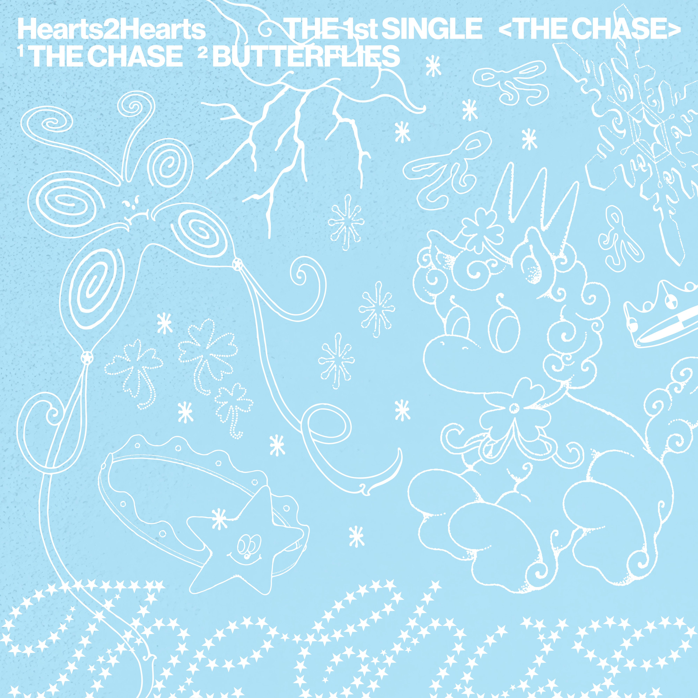
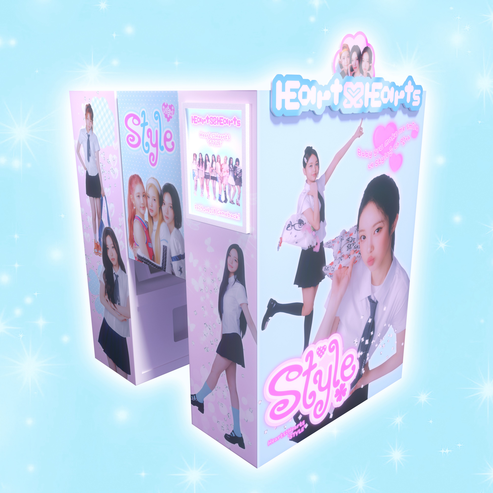
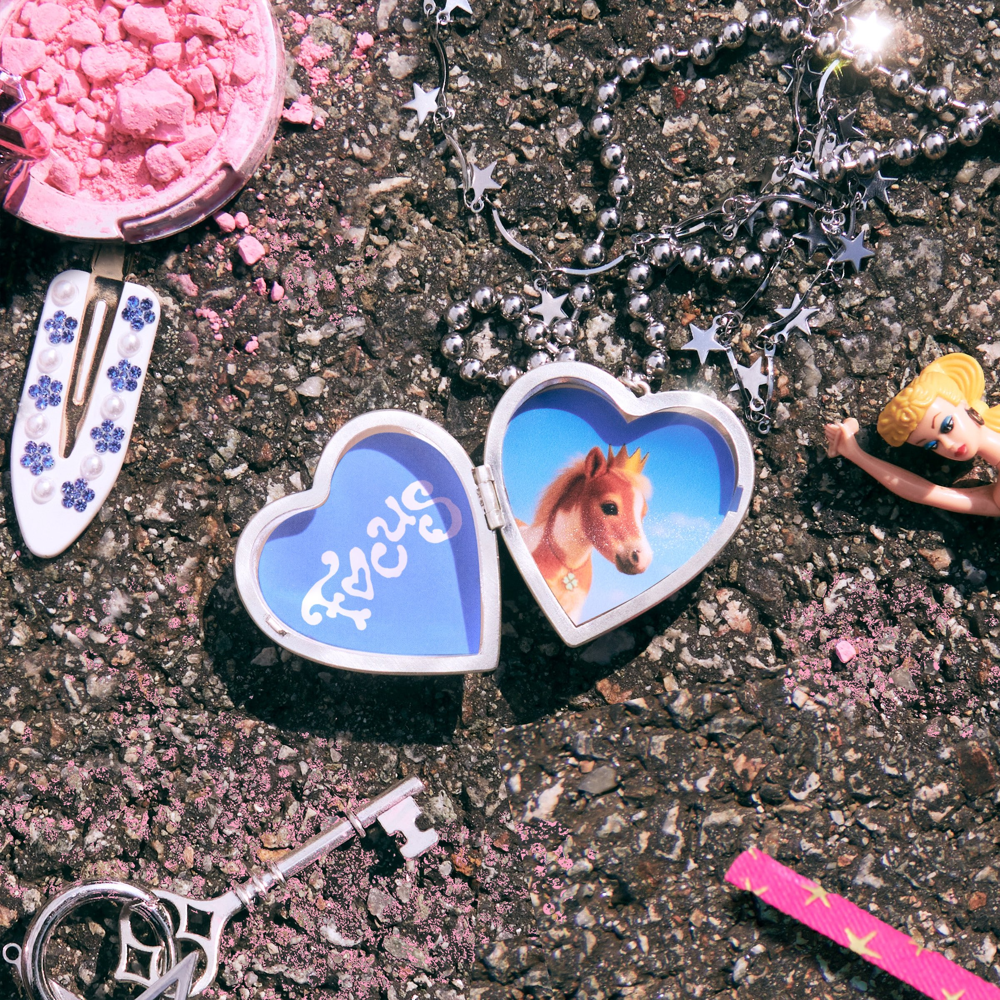

Assista ao nosso novo clipe: "Pretty Please"
O Hearts2Hearts apresenta o single romântico e suave Pretty Please, lançado em parceria com a marca Pokémon. O videoclipe, delicado e encantador, será destaque em campanhas do novo jogo Pokémon Legends Z-A.
Pretty Please fará parte do mini-álbum FOCUS, com lançamento previsto para 20 de outubro de 2025. O single STYLE também estará presente na tracklist.
Assista à nossa primeira apresentação ao vivo de "Pretty Please"
Confira a estreia ao vivo de Pretty Please, marcada por uma performance vibrante, coreografia envolvente e muita emoção. Sinta a energia do Hearts2Hearts no palco e viva esse momento especial conosco!
Nossa Discografia
Singles
-
"The Chase" (24 de fevereiro de 2025)
-
"STYLE" (17 de junho de 2025)
Mini-Albuns
-
1st Mini-Album: "FOCUS" (20 de outubro de 2025)